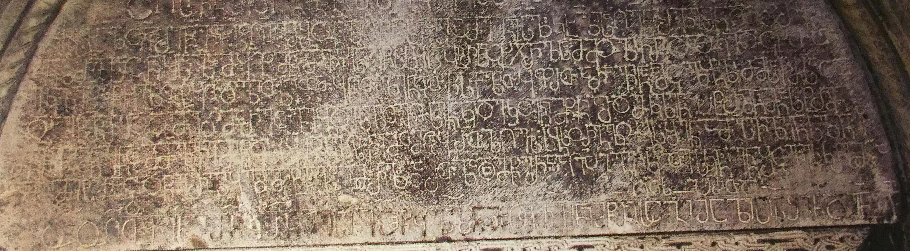

საფარის წმ. საბას ტაძრის იოვანე ღვიას შვილის წარწერა
შინაარსი / Summary
შემომწირველთა
ბიბლიოგრაფია Bibliography
კრიტიკული გამოცემა Interpretive Edition
† ს(ა)ხ(ე)ლ(ი)თა ღ(მრთისაჲ)თ(ა) შეწ(ე)ვ(ნი)თ(ა) წ(მიდი)სა ღ(მრ)თ(ის)ა მშობ(ე)ლი(საჲ)თ(ა) წ(მიდი)სა ს(ა)ბა(ჲ)ს(ი)თა მე ი(ოვა)ნე ს(უ)ლკ(ურთ)ხ(ეუ)ლისა ღვ(ია)სა შვ(ი)ლმ(ა)ნ დ(ა)ო(ჳ)ჭ(ი)რ(ვე)ბ(ე)ლ -
მ(ა)ნ სრ(უ)ლსა ცნ(ობა)სა ზ(ედ)ა მყ(ო)ფმ(ა)ნ მ(ო)ვ(ა)ჴს(ე)ნე წ(მიდა)ს(ა) ს(ა)ბ(ა)ს პ(ა)ტრ(ონ)სა ც(ი)ხ(ის)ჯ(უა)რ(ე)ლსა მ(ა)მო(ჳ)ლი ჩ(ე)მი დაო(ჳ)კლ(ებელა)დ ც(ი)ხ(ი)თა
ეკლეს(იი)თა წყლით(ა) ტყ(ი)თ(ა) ჭ(ა)ლით(ა) სეფ(ი)თ(ა) ყ(ა)ნით(ა) ვენ(ა)ჴ(ი)თ(ა) წ(ის)სქ(ვი)ლით(ა) ყ(ოვლითა) ფ(ე)რ(ი)თ(ა) არავინაა მ(ა)ც(ი)ლ(ო)ბ(ე)ლი ძმასა ჩ(ე)მსაცა
დაეწ(ე)რა მე დ(ი)დი მეჭ(ა)მა არ ვ(ემარ)თლებ(ო)დე ს(ა)ზითვოს(ა)გ(ა)ნ კიდე კო(ჳთ)ვ(ნილ)ნი მ(ი)წ(ა)ნი არ დ(ა)მ(ა)კლენ პ(ა)ტრ(ონ)მ(ა)ნ მ(ო)ნასტრ(ისა)მ(ა)ნ
5მ(ო)ნ(ა)წ(ი)ლემ(ა)ნ ვ(ი)ნცა მ(ა)მ(უ)ლი ჩემი წ(მი)დ(ა)ს(ა) ს(ა)ბ(ა)ს დ(აა)კლოს ჩემთ(ა)მცა ბრ(ალ)თ(ა) ზღ(ა)ვს ს(ა)ბ(ა)ს ორგ(უ)ლობ(ა)ს(ა) შ(ი)გ(ა)ნ ამ(ო)ჰვლენ ს(უ)ლნი
ამ(ი)სი მეტი რაცა დ(ა)წერ(ი)ლი(ა) ყ(ოვე)ლი მეტიალა ზ(ე)მ(ოთ) რ(ომე)ლ კართ(ა) ზ(ედ)ა დამ(ი)წერ(ი)ა აღ(ა)პი გ(ა)ვიკო(ჳ)თე ს(აუ)კ(უ)ნ(ო)ჲ ვ(ი)ნ შ(ე)ცვ(ა)ლ(ო)ს კრ(უ)ლმცა არს
ღ(მრ)თ(ი)ს(ა) პ(ი)რ(ი)თა
დიპლომატიური გამოცემა Diplomatic Edition
† ႱႾႪႧႠ ႶႧ ႸႤႼႥႧ ႼႱႠ ႶႧႠ ႫႸႭႡႪႨႧ ႼႱႠ ႱႡႠႱႧႠ ႫႤ ႨႬႤ ႱႪႩႾႪႨႱႠ ႶႥႱႠ ႸႥႪႫႬ ႣႭႽႰႡႪ
ႫႬ ႱႰႪႱႠ ႺႬႱႠ ႦႠ ႫႷႴႫႬ ႫႥჄႱႬႤ ႼႱ ႱႡႱ ႮႲႰႱႠ ႺႾႿႰႪႱႠ ႫႫႭႪႨ ႹႫႨ ႣႠႭႩႪႣ ႺႾႧႠ
ႤႩႪႤႱႧႠ ႼႷႪႨႧ ႲႷႧ ႽႪႨႧ ႱႤႴႧ ႷႬႨႧ ႥႤႬჄႧ ႼႱႵႪႨႧ Ⴗ ႴႰႧ ႠႰႠႥႨႬႠႠ ႫႺႪႡႪႨ ႻႫႠႱႠ ႹႫႱႠႺႠ
ႣႠႤႼႰႠ ႫႤ ႣႣႨ ႫႤႽႫႠ ႠႰ ႥႧႪႤႡႣႤ ႱႦႨႧႥႭႱႢႬ ႩႨႣႤ ႩႭႥႬႨ ႫႼႬႨ ႠႰ ႣႫႩႪႤႬ ႮႲႰႫႬ ႫႬႠႱႲႰႫႬ
5ႫႬႼႪႤႫႬ ႥႬႺႠ ႫႫႪႨ ႹႤႫႨ ႼႣႱ ႱႡႱ ႣႩႪႭႱ ႹႤႫႧႫႺႠ ႡႰႧ ႦႶႥႱ ႱႡႱ ႭႰႢႪႭႡႱ ႸႢႬ ႠႫჀႥႪႤႬ ႱႪႬႨ
ႠႫႱႨ ႫႤႲႨ ႰႠႺႠ ႣႼႤႰႪႨ ႷႪႨ ႫႤႲႨႠႪႠ ႦႫ ႰႪ ႩႠႰႧ ႦႠ ႣႠႫႼႤႰႠ ႠႶႮႨ ႢႥႨႩႭႧႤ ႱႩႬჂ ႥႬ ႸႺႥႪႱ ႩႰႪႫႺႠ ႠႰႱ
ႶႧႱ ႮႰႧႠ

საფარის წმ. საბას ტაძრის იოვანე ღვიას შვილის წარწერა
{'ka': 'ღმრთის სახელით, ღვთისმშობლის, წმიდა საბას შეწევნით, მე, იოვანემ, სულკურთხეული ღვიას შვილმა, დაუჭირვებელმა, სრულ ცნობაზე მყოფმა,\n მოვახსენე წმიდა საბას, ციხისჯუარელ პატრონს, ჩემი მამული სრულად: ციხით, ეკლესიით, წყლით, ტყით, ჭალით, სეფე ყანით, ვენახით, წისქვილით,\n ყველაფრით, შემცილებელი არავინ არის.\n ჩემმა ძმამაც შესწირა [მამულები], იმით მეც მისარგებლია და არ ვემართლები.\n მზითევში მონაყოლი მიწა არ შემიწირავს მონასტრის პატრონისთვის.\n ვინც ჩემი შეწირული მამული წმიდა საბას დააკლოს, ჩემი ცოდვებიც ზღოს. საბას ორგულობაში ამოხდეს სული.\n რაც დაწერილია, იმაზე მეტი მეტიალა.\n ზემოთ, კარზე რაც დამიწერია, აღაპი დამიდგენია საუკუნო. ვინც შეცვალოს, კრულ იყოს ღმრთის პირით.'}
{'default': 'საფარის მონასტერი ძველი დროიდანვე სხვადასხვა დანიშნულების 12 ნაგებობისაგან შედგებოდა. მათ შორის მთავარია წმ. საბას\n სახელობის ტაძარი, აგებული ბექა სამცხის სპასალარისა და მანდატურთუხუცესის მიერ XIII-XIV სს. მიჯნაზე. საფარაში ამაზე ძველი ეკლესიაც არსებობს, X ს-ის\n ღვთისმშობლის მიძინების სახელობის ტაძარი, რომელსაც ჩრდილოეთიდან მიდგმული აქვს ზემოხსენებული წმ. საბას ტაძარი.\n საფარის წმ. საბას ტაძრის დასავლეთის შესასვლელის დიდი ზომის არქიტრავზე ქვემოდან ზემოთ\n ერთმანეთის თანმიმდევრობით ამოკვეთილია სამი წარწერა-საბუთი. ზემოდან პირველი წარწერა არის ოქროპირ გაბეცასძის მიერ ეკლესიის\n ქვის ფილებით გადასახურად 120 ბოტინატის შეწირვის შესახებ, მეორე - იოვანე ღვიას შვილის წარწერა,\n ხოლო მესამე - გიორგი მალეს წარწერა კარის შეწირვის შესახებ.\n იოვანე ღვიას შვილის წარწერა, როგორც წერილობითი ძეგლი, პალეოგრაფიულად ამოვარდნილია ქართული დამწერლობის განვითარების\n მაგისტრალური გზიდან - კიდურწაისრული დამწერლობა იმ სახით, როგორითაც ეს წმ. საბას ტაძრის ამ წარწერაშია, დამახასიათებელია XI\n საუკუნისათვის. სხვა მხრივ, ეს წარწერა თავისი ეპოქის (XIII-XIV სს.) ძეგლია.\n წარწერის მიხედვით, იოვანე წერს, რომ ჩამოთვლილი ქონება წმ. საბას პატრონ ციხისჯვარელს (ალბათ, ბექას მამას სარგისს) მოვახსენე\n „სრულსა ცნობასა ზედა მყოფმანო“. ეს ფორმულა, როგორც ცნობილია, ანდერძებში, რბილ საწერ მასალაზე (ეტრატი, ქაღალდი) შესრულებულ\n წერილობით ძეგლებში გვხვდება (მაგ., გრიგოლ სურამელი 1247/1250 წწ. დათარიღებულ ანდერძში შიომღვიმისადმი წერს: „ესე ყოველი ჩემითა ნებითა დამიწერია,\n სრულითა ცნობითა, სიმრთელესა შინა ტანისა ჩემისასა“, ქართული ისტორიული საბუთების კორპუსი, I, 123:14-15), ხოლო წარწერებში უცნობია.\n იოვანე, მართალია, მთელ თავის ქონებას ეკლესიას სწირავს, მაგრამ მზითევში მონაყოლ მიწას, როგორც ცოლეულს, თავისთვის იტოვებს. როგორც ჩანს, რადგანაც\n მან მთელი მამული და ქონება ეკლესიას შესწირა, მემკვიდრე არ ჰყავდა, ხოლო ცოლეული მამული პატრონის გარდაცვალების შემდეგ ისედაც სახელმწიფო\n საკუთრებაში გადადიოდა. იოანეს გარდა, თავისი ქონება ეკლესიისათვის მის ძმასაც გადაუცია („ძმასა ჩემსა დაეწერა“). ამ ცნობას მოსდევს ცოტა ბუნდოვანი\n გამოთქმა: „მე დიდი მეჭამა, არ ვემართლებოდე“. ბოლოს წერს მისთვის საუკუნო აღაპის დადგენის შესახებ, „რომელ კართა ზედა დამიწერიაო“. არსად ტაძრის\n „კართა ზედა“ მისთვის აღაპის დღის დადგენის შესახებ არაფერია ნათქვამი. შესაძლოა, როგორც ოქროპირ გაბეცასძის წარწერაშია მოცემული, მისთვისაც შობის მარხვის\n დასრულება ვივარაუდოთ. ღვიას შვილი იოვანე საკმაოდ შეძლებული ფეოდალი ყოფილა, რადგან მონასტრისათვის შეწირული დიდძალი ქონების (ციხე, ეკლესია, წყალი,\n ტყე, ჭალა, სეფე ყანა, ვენახი, წისქვილი) ჩამოთვლის შემდეგ ერთგან აღნიშნავს: „ამისი მეტი, რაცა დაწერილია, ყოველი მეტიალა“, თუ, ცხადია, ეს ჩამოთვლა საბუთებში\n მიღებული ტრაფარეტული ფორმულის მიბაძვა-გამეორება არ არის. უცნაურია, რომ ამ წარწერა-საბუთის ტექსტში დასახელებული არ არის ის ადგილი, მისი სახელწოდება\n და მდებარეობა, რომელშიც იყო ეს დიდძალი უძრავი ქონება, ღვიას შვილმა რომ შესწირა მონასტერს. არც იმის თქმა შეიძლება დანამდვილებით, ღვიას შვილი იოანეს გვარია თუ\n მხოლოდ მამის სახელის აღნიშვნა. ღვიასშვილის თუ ღვიასაშვილის გვარიც იმდროინდელ სამცხელ ფეოდალებში არ ჩანს. ეს გვარები ცნობილია XVI ს-ის დასაწყისის საბუთის -\n „კათალიკოზის სამწყსონი თავადნი და სოფელნი სამცხე-საათაბაგოში“ მიხედვით (ქართული სამართლის ძეგლები, ტ. III, საეკლესიო საკანონმდებლო ძეგლები (XI-XIX სს.),\n ტექსტი გამოსცა, შენიშვნები და საძიებლები დაურთო ი. დოლიძემ, თბ., 1970, 242-244): კავკასიძენი, სამძივარნი, გოგიჩასშვილები, ბუმბულისძენი, ავალისშვილები,\n სლესარნი, ლონგოსძეები, ლასურისძენი და ა.შ., სულ 37 საგვარეულო, ზოგიც შემდეგში სხვაგან გადასახლებულნი და ზოგიც ამომწყდარნი. ღვიასაშვილები კი მათში არ ჩანს.'}
<div type="edition" xml:lang="ka" ana="mtavruli" xml:space="preserve">
<ab>
<lb n="1"/><w lemma="ქრისტე"><expan><abbr>ქ</abbr><ex>რისტ</ex><abbr>ე</abbr></expan></w>
<w lemma="განსუენება"><expan><abbr>გა</abbr><ex>ნ</ex><abbr>ო</abbr><ex>ჳ</ex><abbr>ს</abbr><ex>უ</ex><abbr>ენე</abbr></expan></w>
<w lemma="სულ">სოჳ<lb n="2" break="no"/>ლსა</w>
<name nymRef="ვაჩა">ვაჩაჲს<lb n="3" break="no"/>ასა</name>
<name nymRef="გურა"><expan><abbr>გო</abbr><ex>ჳ</ex><abbr>რაჲ<lb n="4" break="no"/>სასა</abbr></expan></name>
<name nymRef="მირა"><expan><abbr>მ</abbr><ex>ი</ex><abbr>რა</abbr><ex>ჲ</ex><abbr>ს</abbr><ex>ა</ex><abbr>ს</abbr><ex>ა</ex></expan></name>
</ab>
</div>